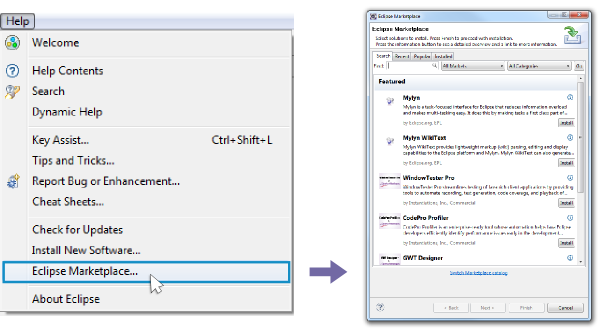

Browse the Marketplace, choose Sirius and just click on the install button.

Requirement: Please make sure that Marketplace is already installed in your Eclipse, otherwise these installation instructions won't work as expected. For more details, please refer to Introducing the Eclipse Marketplace Client installation guide.
Add this URL to your Eclipse Installation to reach Sirius Update Site.
You can also download the corresponding zipped archive for offline installation.
Add this URL to your Eclipse Installation to reach Sirius Update Site.